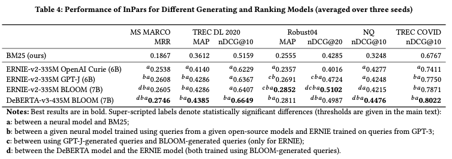

InPars light 論文解読
InPars-lightは、無料で利用可能な言語モデルBLOOMをランキングモデルを使用し、1000個ではなく100個の候補レコードを再ランクしした。 先行研究の主要な知見を再現するだけでなく、Consistency checkingとAll-domain pre-trainingを組み合わせることで、非常に効率的で小型なモデルMiniLM-L6-30Mを訓練し、すべてのデータセットでBM25を上回る性能を達成した。最後に、大きなDeBERTA-v3-435Mモデルを使用して、7倍大きなMonoT5-3Bの性能をほぼマッチさせることができた。
論文URL：<https://arxiv.org/abs/2301.02998>
1 Introduction
IR領域でのニューラルモデルを学習させるためには、大量なラベリングしたデータが必要である。データラベリングのコストが非常に高い：Document-Queryのペアが関連するかを判断するには1分以上かかる。一個のQueryについては通常50件以上のドキュメントを見る必要がある。そのため、最近の研究は主にラベリングデータを生成することに集中している。
一方、今までの研究はお主にLLMsを使っていて、費用対効果が良くない。また、GPT3のようなLLMsはAPIのみアクセスしかできない。その2つの問題を解決するためには、この論文はInParsを再現し、改善を行った。
InParsがmonoT5-3Bとmonot5-220Mを使ったが、この論文は30MのLMと435MのDebertaを使って同等レベルの結果を得られた。Inparsは上位1000件のドキュメントをRerankしたが、この論文は100件のみRerankしている。
この論文は以下のResearch Questionを提起した：
- 情報検索（IR）能力は、単に大規模なnext-token-prediction学習から生まれるか。
- データ生成においてOpen sourceのモデルは同じサイズのGPT3より劣るか。
- 一致性検査(Consistency checking)はほんとに有用か。
- より小さいBertモデルでMonoT5-3Bを置換する場合は同じ性能を出せるか
- 30Mの小さいLMを使う場合はBM25に勝てるか。
結果：
1&2: BLOOMやGPT-JのようなOpen source LLMは同等サイズなGPT3より高性能の同時に、コストが1/10のみ。
3: 一致性検査はいつも有効である。
4&5：InParsのやり方だと小さいモデルは使えない。一方、全部のデータゼットで前学習し、さらに生成したデータでFine-Tuningした30MのモデルがいつもBM25よりよい結果を出した。
3 Methods
この論文も2段階の検索を使った。まずBM25で大量なDocumentから関連するDocumentをフィルタリングする。そのつぎにニューラルモデルでRerankする。
RerankはCross-encoderを利用した。具体的に以下の3種類なものがある。
- MiniLM-L6(30M)
- ERNIE-v2(335M)
- DeBERTA-v3(435M)
ERNIEとDeBERTAを利用した理由としては、今2つのモデルはMS MARCOで強い結果を出したことがある。
Inparsと同じように各データセットに対して100kのQueryを生成した。生成したQueryとDocumentのペアでRerankerを学習させ、それを使ってConsistency checkingをした。Consistency checkingをする時に、生成したQueryで検索をかけて、生成元のDocumentがTop-Kにないとそれを捨てる。Kについては、1でも良いが、3のほうが精度が高かった。
また、面白いのは、Consistency checkingでフィルタリングしたデータとLog Probabilityでフィルタリングしたデータは20〜30%のみ共通している。
Rerankerを学習させる際に、まず生成した全データで学習させ、その上で、フィルタリングしたデータでFine-Tuningを行った。
この研究でMiniMLに対して、まずすべてのデータセットで生成したすべてのデータで学習し、さらにすべてのデータセットのフィルタリングしたデータでFine-Tuningしたが、過学習した。
実装する際に、FlexNeuARTのフレームワークを使った。モデルを学習させる際にInfoNCE Lossを使った。各Queryに対してNegative sampleを、BM25で検索できた上位1000件の中から3つサンプリングした。
各モデルについて、3つのSeedで3回学習し、結果の平均値をとった。結果の有意性のチェックはpaired two-sided t-testを使った。大きいデータセットだと0.01の閾値を使った。小さいデータセットだと、0.05の閾値を使った。
Promptの作り方はInParsが使った一般的なやり方と同じ。Queryを生成する際に、最大Token数を32に設定した。
4 データセット
InPars[4]の主要結果を再現するために、同じクエリとデータセットを使用した。MS MARCO以外のデータセットは「ir_datasets」というツールを利用して処理した。
InParsの論文で提供したGithubにGPT-3 Curieモデルで生成されたクエリと、それを生成するための文書が提供されている。これにより、GPT-3 CurieとオープンソースモデルGPT-J、BLOOMで生成されたQueryの品質を比較できる。クエリの生成コストがまだ高いため、他のオープンソースモデルの検討は将来の課題である。
5 Results
5.1 Main Results

BM25 この論文は使うフィールドについて少し調整したが、InParsの結果と大きく変わらない。
教師なし学習 今回使ったDeBERTA-v3-435Mは以前のMonoT5-3Bの性能と同じ。また今回提案したMiniLM-L6-30MはInParsのものT5-220M相当な性能を出している。
Consistency checkingとall-domain pre-training 両方とも良い影響を与えることがわかる。Deberta-v3-435Mに対してAll-domain pre-trainingが逆効果があるが、理由が不明。
教師あり学習 今回提案した2つのモデルの性能がいまいち。

Queryを生成するLLMモデルの比較について、オープンソースのGPT-JとBLOOMはOpen AI Curieよりよい性能を出している。
また、Rerankerについては、Deberta-v3-435MはERNIE-v2-335Mよりよいことがわかる。
5.2 Cost and Efficiency
RTX3039を使う場合は：
- MiniLM-L6-30Mの推論のThroughputは1秒500ドキュメント(LLM各ドキュメントの長さは477キャラクター以下)、そのため、100ドキュメントをRerankする場合は1秒かからない。
- MiniLM-L6-30Mを全データセットで前学習しても2時間しかかからない。一方、Deberta-v3-435Mは28時間かかる。
- all-domain pre-trainingをする際に、一番時間がかかる操作はMS MARCOのような大きいなデータセットのバリデーションとConsistency checking。Deberta-v3-435MでMS MARCOでのバリデーション時間は6時間、Consistency checkingだと48時間かかった。
- Query生成の時間：100kのQueryを生成するためには15時間がかかる。